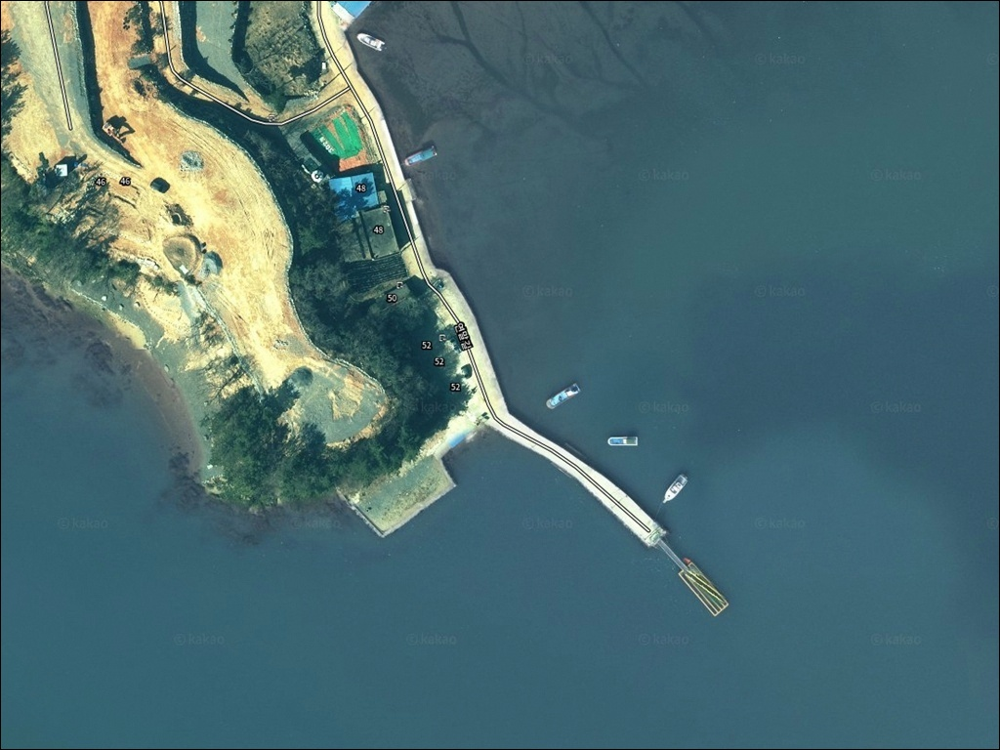
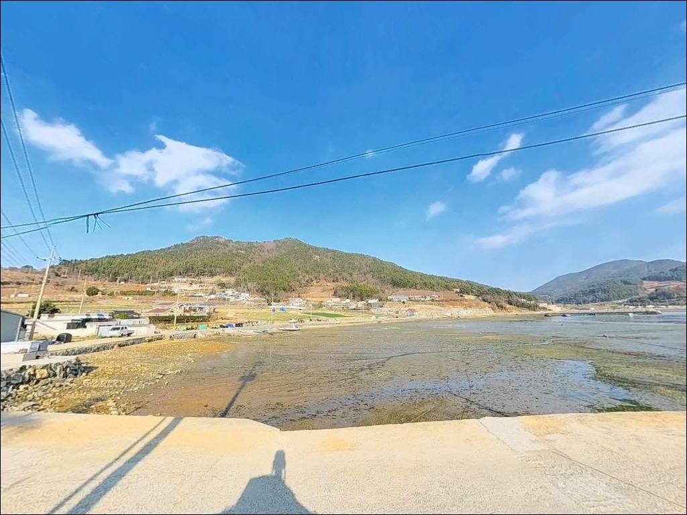
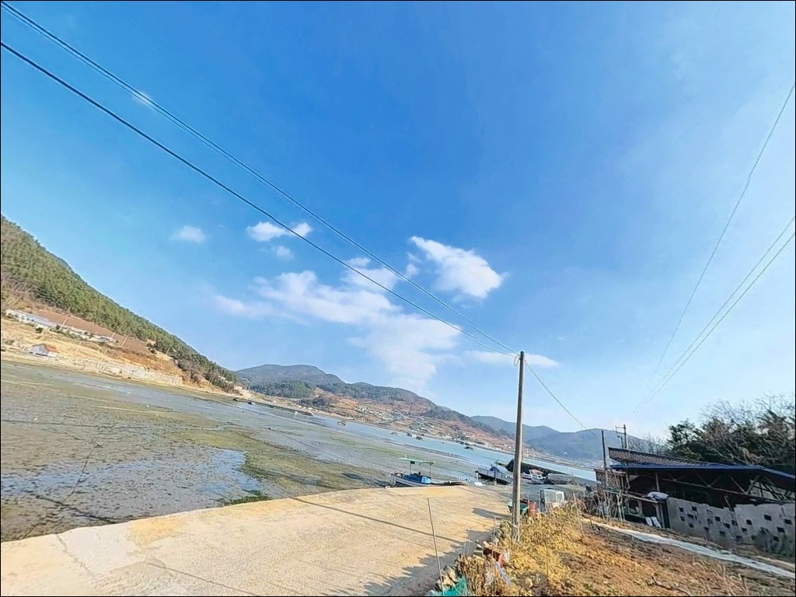
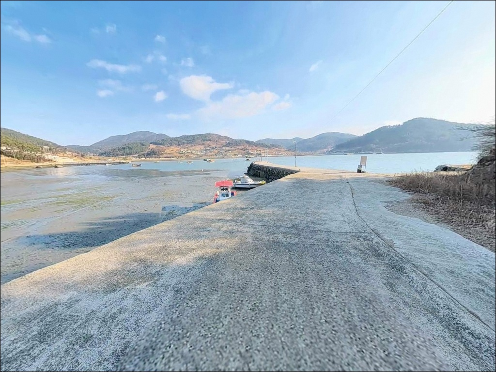
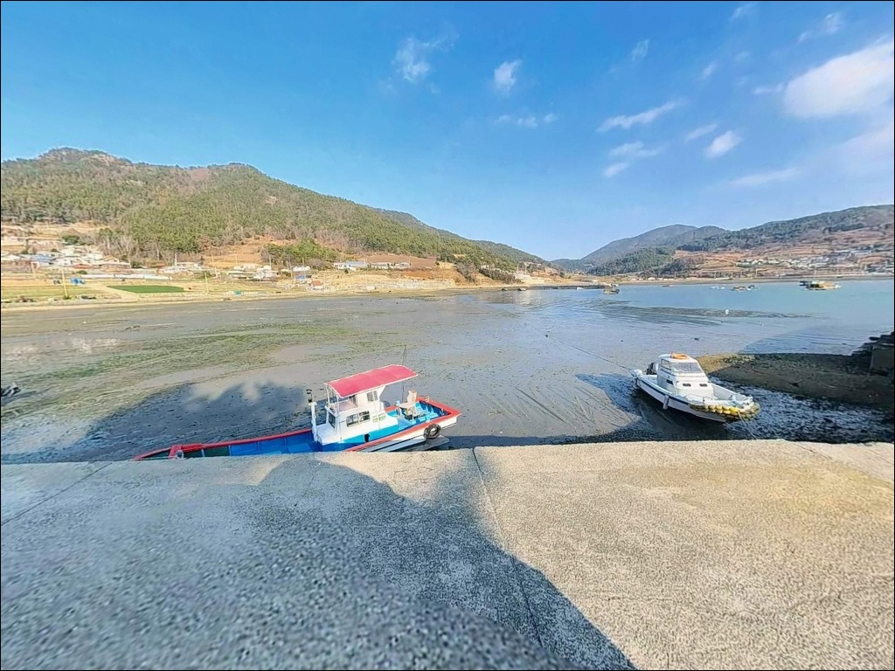
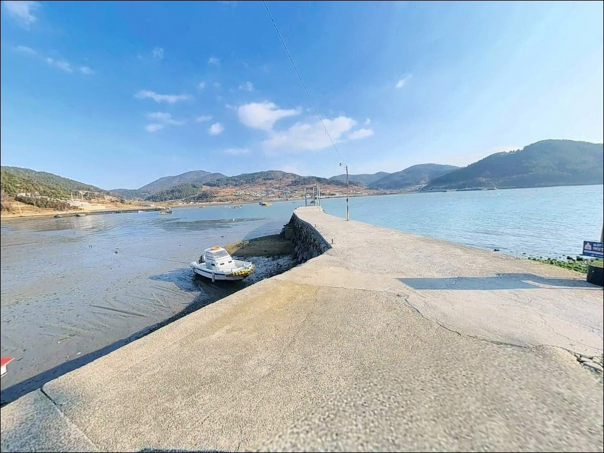
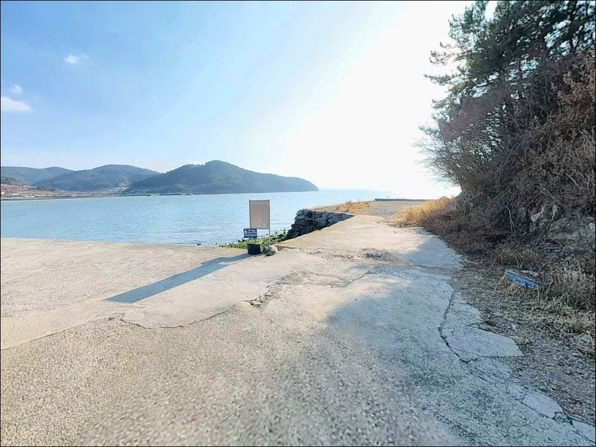
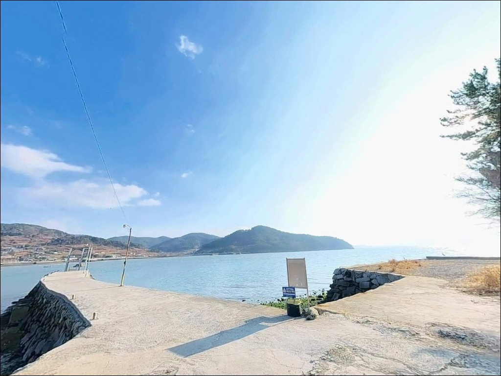
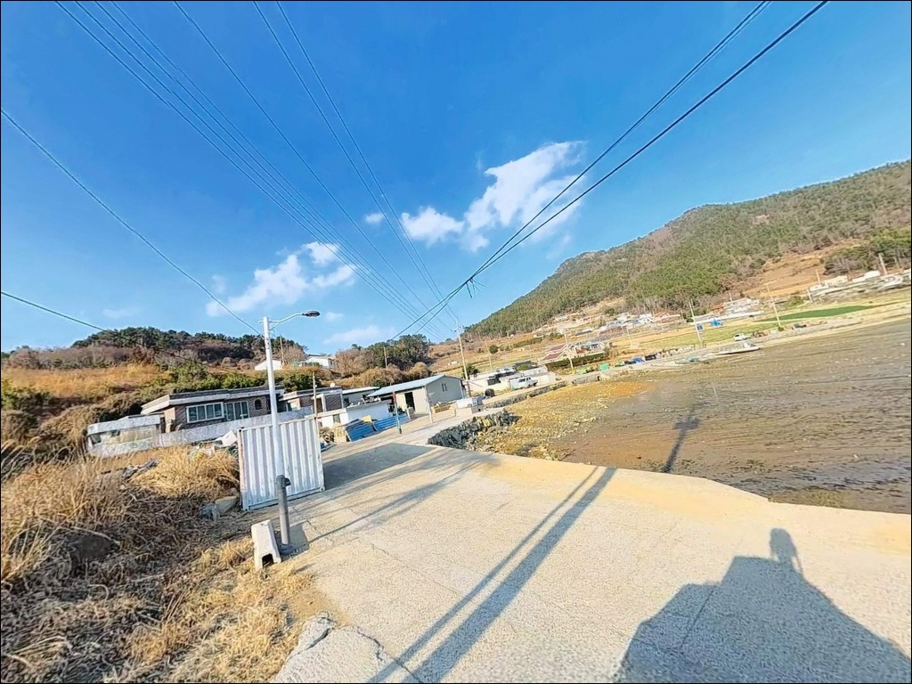

2.6노트 조류에 채비 쏠릴 때, 여수 이목선착장에서 초날물에 터진 입질
이 페이지에는 광고(제휴 링크 포함)가 있으며, 광고 링크를 통해 구매하면 운영자가 판매 수익 또는 수수료를 받을 수 있습니다. 포인트 사진: 카카오맵 스카이뷰·로드뷰. 이 페이지의 지도·사진 이미지는 카카오맵의 실제 서비스 이미지와 다를 수 있습니다.


포인트 안내
이목선착장
전남 여수시 화양면 이목리 1386-2
조발수도 방면 조류가 직접 영향을 미치는
이 일대 해역은 사리 전후
최강 조류 속도가 2.4~2.6노트 수준까지 오릅니다.
그 타이밍을 피해 초날물 구간을 노려야
채비 운용이 제대로 살아납니다.
이목선착장은 고돌산반도 서남부 해안에 위치하며,
이목방파제로도 불리는 소형 선착장·방파제 복합 구조입니다.
여자만과 조발수도가 교차하는 해역을 바라보는 위치로,
내만 생활어종부터 감성돔, 갑오징어까지
다양한 어종의 회유 경로에 해당합니다.
이 글은 이목선착장의
진입 동선, 차박 여건, 물때 판단 기준,
낚시 방식별 공략 조건에 집중합니다.
조황 단정이나 특정 어종 보장은
이 글의 범위에 포함되지 않습니다.

1. 진입 동선과 포인트 접근 조건
이목선착장으로 가는 기본 경로는
863번 지방도를 통해 이목리 마을 안길로
접어드는 방식입니다.
마을 구간에 들어서면 도로 폭이 좁아지는데,
승용차나 중형 SUV 한 대가
교행에 주의해야 하는 수준의 농어촌 도로입니다.
해안도로로 내려오면 선착장·포구로 자연스럽게
연결되는 구조라 진입 자체의 난이도는 높지 않습니다.
다만 대형 캠핑카나 카라반을 끄는 차량이라면
마을 안길 진입 전에
위성지도로 도로 폭을 미리 확인하고 가는 편이 안전합니다.
주차는 선착장 진입부 공터를 우선 활용합니다.
소형 차량 기준 2~3대 수용 가능한 규모이며,
마을 도로변 갓길도 1~2대 수준으로 추가 활용할 수 있습니다.
어선 입출항 동선과 겹치지 않는 자리를
먼저 확인하는 것이 기본입니다.

2. 차박 환경과 야간 체류 여건
이목리는 민가와 전원주택이 포구 주변에 자리한
소규모 어촌마을 구조입니다.
야간 차량 통행은 거의 없고
해안도로변은 정숙한 편이지만,
완전히 외떨어진 외곽 포인트와는 다른
마을 생활권 안의 차박 환경입니다.
가로등은 마을 안쪽을 중심으로 일부 있으며,
선착장 구간은 야간 조명이 제한적입니다.
별도 헤드랜턴과 조명 장비를 갖춰야 하며,
발전기 소음이나 대화 소리가
민가로 바로 전달될 수 있는 거리인 점을 고려해야 합니다.
낚시 후 하룻밤 조용히 머무는 용도로는
검토 가능한 구조이지만,
주차 공간이 넉넉하지 않아
차박을 메인 목적으로 삼기보다는
낚시 대기·휴식 개념으로 접근하는 편이 현실적입니다.


3. 주변 편의시설 및 인프라 현황
이목리 반경 3km 이내에는
편의점이나 마트 등의 상업시설이 없습니다.
화양면 소재지인 나진리까지
차량으로 10~15분 거리를 이동해야
기본적인 장보기와 편의시설 이용이 가능합니다.
낚시 소품과 채비는 출발 전 미리 준비하는 것이 좋습니다.
여수 시내권에서 낚시점을 들른 후 진입하는 동선이
현실적이며, 식수와 얼음, 연료도
출발 전에 충분히 갖추고 가는 편이 안전합니다.
반경 10km권으로 범위를 넓히면
화양면 내 다수 방파제와 조발도 진입 기지가
이동 가능한 거리에 있어,
차량 기반의 하루 낚시 루트로 묶어
활용하기에 적합한 위치입니다.

4. 물때와 기상 — 방문 전 반드시 챙겨야 할 준비사항
이목선착장 방문에서 가장 먼저 확인할 것은
물때입니다.
이 일대 해역은 낭도 부근 조류 영향을 받아
사리 전후에는 조류 속도가 빠르게 올라갑니다.
초날물 타이밍을 기준으로 입장 시각을 맞추는 것이
채비 컨트롤의 기본 전제입니다.
바다타임에서 이목방파제 기준 물때를 확인하고,
조류 방향이 전환되는 정조 전후 구간을
메인 공략 시간으로 잡는 방식이 유효합니다.
기상청 해양 예보도 출조 당일 아침에
다시 한번 확인하는 편이 좋습니다.
선착장 끝단은 이끼와 수분으로
바닥이 미끄러운 구조입니다.
안전화나 방수 스파이크 신발을 착용하고,
야간에는 구명조끼를 반드시 착용해야 합니다.
채비 손실이 잦은 편이니 여분 채비도 넉넉하게
챙겨가는 편이 출조를 살립니다.

5. 조발수도와 여자만이 만나는 지형 — 낚시 여건 분석
이목선착장은 고돌산반도 서남부 해안에서
여자만과 조발수도 사이 해역을 바라보는 위치에 있습니다.
선착장 안쪽은 내만 특성이 강해 수면이 잔잔하고,
바깥쪽으로 나갈수록 수심이 깊어지면서
조류 흐름이 살아나는 구조입니다.
방파제 끝단 기준으로 만조 시 수심은
6~8m 안팎으로 형성됩니다.
바닥은 모래와 뻘이 혼합된 저질이며,
선착장 주변 구조물을 따라 암반 가장자리도
일부 이어져 있습니다.
간조 시에는 내항 일부 구간 바닥이 드러나므로
물때를 맞춰 외항 공략에 집중하는 것이 유리합니다.
이 일대 해역은 조발수도 방면 조류가
물돌이 타이밍에 방향을 바꾸며 변화를 만들어냅니다.
완전 내해처럼 조류가 멈추지 않으면서도
극단적으로 강하지 않은 중간 지점의 조건이라,
노래미, 볼락, 숭어, 도다리, 붕장어 등이
이 수심대에서 활동하는 것을 기대해 볼 수 있습니다.
가을철에는 연안 내만으로 들어오는
갑오징어도 이 해역 특성에 해당합니다.
출조 전에 이목방파제 조황을 먼저 검색해 보시기 바랍니다.


6. 포인트에 어울리는 낚시 스타일
이 포인트에서 가장 기본이 되는 낚시는 원투낚시입니다.
선착장 끝단에서 외항 방향으로 채비를 멀리 보내면
모래·뻘 혼합 저질 바닥층을 노릴 수 있습니다.
도다리, 노래미, 붕장어, 우럭 계열이
이 방식으로 기대해 볼 수 있는 어종입니다.
찌낚시도 잘 맞는 스타일입니다.
선착장 벽면과 구조물 주변 5~8m 수심대를
민장대나 릴찌 채비로 노리는 방식으로,
조류가 완만해지는 정조 구간에 유효합니다.
가을부터 초겨울 사이에는
방파제 외항 쪽 찌낚시로 감성돔을 기대하는
낚시인이 찾는 구간이기도 합니다.
야간에는 소형 루어 낚시도 활용도가 높습니다.
선착장 가로등 주변과 구조물 그늘을 따라
지그헤드에 웜을 달아 천천히 탐색하면
볼락과 우럭을 노릴 수 있는 조건이 갖춰져 있습니다.
야간 가로등 주변에서는 풀치(갈치) 루어낚시도
시즌에 따라 반응을 기대해볼 수 있는 구간입니다.
가을철에는 에깅으로 갑오징어를 노리는
낚시인도 이 해역을 찾습니다.

7. 대안 포인트와 플랜 B 동선
이목선착장에서 자리가 여의치 않거나
조류 조건이 맞지 않을 때는
마상리 방파제를 첫 번째 대안으로 봅니다.
같은 화양면 해안에 위치하며
이목선착장과 어종 구성 및 내만 조류 패턴이
유사한 환경입니다.
벌구방파제와 장수방파제도
차량으로 이동 가능한 거리의 대안 포인트입니다.
이 일대 화양면 해안은 방파제와 선착장이
해안선을 따라 촘촘하게 분포해 있어
하루 동선으로 여러 포인트를 묶어
탐색하기에 적합한 구조입니다.
조화대교를 통해 조발도 방파제에 진입하는 동선도
고려해볼 수 있습니다.
볼락과 감성돔 포인트로 알려진 곳이며,
규모가 더 크고 수심도 깊어
이목선착장이 기대에 못 미칠 경우
본격 낚시로 전환하기 좋은 대안입니다.

물때와 조류를 읽으면
이목선착장이 제대로 보입니다
원투낚시와 찌낚시를 기본으로 삼고
야간 루어 공략까지 더하고 싶은 낚시인이라면
이목선착장의 지형 조건은
잘 맞는 구조입니다.
내만 특성의 잔잔한 해면, 모래·뻘 혼합 저질,
물돌이 타이밍에 살아나는 조류 흐름이
복합 공략을 가능하게 합니다.
다만 편의시설 없이 완전 자급으로 진입해야 하고,
마을 생활권 안에 있는 선착장이라
소음과 주차 예절이 방문 전에 먼저 정해져야 합니다.
물때 확인, 채비 사전 준비, 진입로 점검,
이 세 가지를 갖추고 간다면
화양면 해안에서 조용하게 하루를 보낼 수 있는
포인트입니다.
차박을 겸할 경우,
선착장 앞 공터 공간 여부를 미리 확인하고
낚시와 차박 모두 마을 매너를 전제로 삼으면
고돌산반도 해안의 조용한 하룻밤을
즐길 수 있습니다.